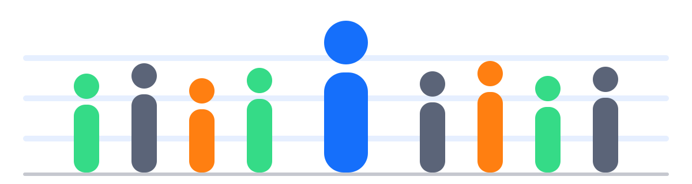

Ce que vous saurez faire en fin de journée
- Adapter votre communicationLire les comportements et les besoins de vos collaborateurs avec le modèle DISC, et ajuster vos leviers de motivation.
- Recadrer avec justesseChoisir la bonne stratégie d'entretien selon la situation et les réactions du collaborateur.
- Passer du chiffre à l'actionAnalyser un écart d'indicateur, en chercher les causes et décider d'actions managériales concrètes.
- Animer des briefs qui mobilisentGagner en clarté et en engagement lors de vos briefs d'équipe.
- Déléguer et responsabiliserAjuster le niveau d'autonomie, les objectifs confiés et le suivi, sans micromanagement.
Le programme, module par module
9h00 · Accueil et cadrage de la journéePauses à 11h00, 12h30 et 15h3017h00 · Fin
1Manager avec clarté et exigence9h30 – 10h15
- Clarifier les attentes et les objectifs opérationnels.
- Formuler des feedbacks précis, constructifs et exigeants.
- Trouver le juste équilibre entre soutien, exigence et contrôle.
Comment : apport court, atelier de reformulation, feedback en 90 secondes.
2Recadrer sans dégrader la relation10h15 – 11h00
- Structurer un entretien de recadrage à partir des faits et de leurs impacts.
- Gérer les objections et les réactions du collaborateur.
- Garder une posture sereine et obtenir un engagement concret.
Comment : jeux de rôles sur des cas de performance et de comportement, feedback entre pairs.
3Adapter son management avec le modèle DISC11h15 – 12h30
- Identifier les styles comportementaux à partir d'indices observables.
- Analyser les besoins, les motivations et les réactions sous stress.
- Ajuster sa communication et ses interventions selon les profils.
Comment : présentation interactive, cartes profils, diagnostic de cas.
4Gérer les conflits et les situations de performance13h45 – 14h45
- Analyser les situations de tension entre collaborateurs.
- Adapter sa posture et sa communication pour résoudre un conflit.
- Conduire un échange de performance exigeant et responsabilisant.
Comment : jeux de rôles tournants avec grille d'observation. La reprise de 13h30 commence par un quiz en équipes.
5Accompagner le changement14h45 – 15h30
- Donner du sens aux décisions et aux évolutions d'organisation.
- Analyser les différentes réactions face au changement.
- Adapter son accompagnement pour garder l'engagement de l'équipe.
Comment : simulation d'annonce (par exemple une opération commerciale) face à trois réactions : opposition, enthousiasme dispersé, résistance silencieuse.
6Transformer les indicateurs en actions managériales15h45 – 16h15
- Analyser les écarts de performance à partir d'indicateurs opérationnels.
- Identifier les causes possibles et questionner avant de conclure.
- Définir des actions correctives et leur suivi.
Comment : étude de cas en binômes sur un mini tableau de bord (CA, marge, casse ou démarque). Restitution en 3 minutes : constat, causes à vérifier, décision, suivi.
7Adopter une posture de manager-coach16h15 – 16h40
- Développer l'autonomie des collaborateurs par le questionnement.
- Déléguer en définissant des objectifs et des résultats attendus.
- Adapter le contrôle sans tomber dans le micromanagement.
Comment : entraînement en binômes, construction d'un contrat de délégation simple.
8Consolider les acquis et formaliser son plan d'action16h40 – 17h00
- Identifier ses points forts et ses axes de progression.
- Formaliser trois engagements managériaux mesurables à 30 jours.
- Définir les indicateurs qui permettront de vérifier la mise en pratique.
Comment : plan d'action individuel et engagement entre pairs. Un carnet d'expérimentation vous accompagne pendant les 30 jours suivants.
Le mot du formateur
La vidéo de présentation sera bientôt disponible.
« Cette journée est un entraînement, pas un rappel de bases. Vous venez avec vos situations du magasin, vous repartez avec trois engagements concrets à tenir dans les 30 jours. »
Romain BreuxFondateur de Skiill Retail Academy, ancien directeur de magasin, praticien certifié DISC
Où se déroule la formation
40160 Parentis-en-Born
La formation a lieu dans les locaux de votre entreprise.
Besoin d'un aménagement d'accès ou de salle ? Prévenez-nous au moins 4 semaines avant la session.
Vous venez à plusieurs ? Pensez au covoiturage.
La carte est fournie par Google. Elle ne se charge qu'à votre demande, car Google peut alors déposer des cookies.
Vos documents
Une formation accessible à toutes et tous
Si vous êtes en situation de handicap, ou si vous avez un besoin particulier, nous adaptons les supports, le rythme et les mises en situation. Contactez notre référent handicap avant la session, idéalement 4 semaines à l'avance.
Romain Breux, référent handicap · 06 76 26 18 52 · romain@skiill.fr